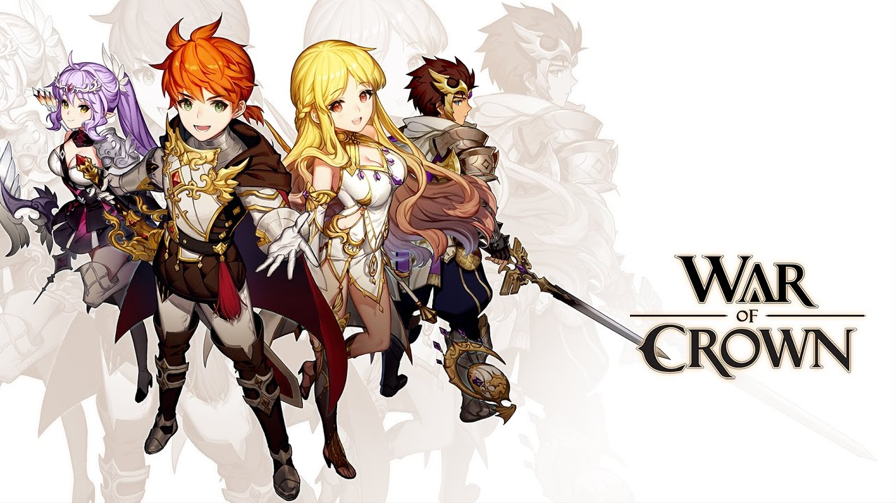
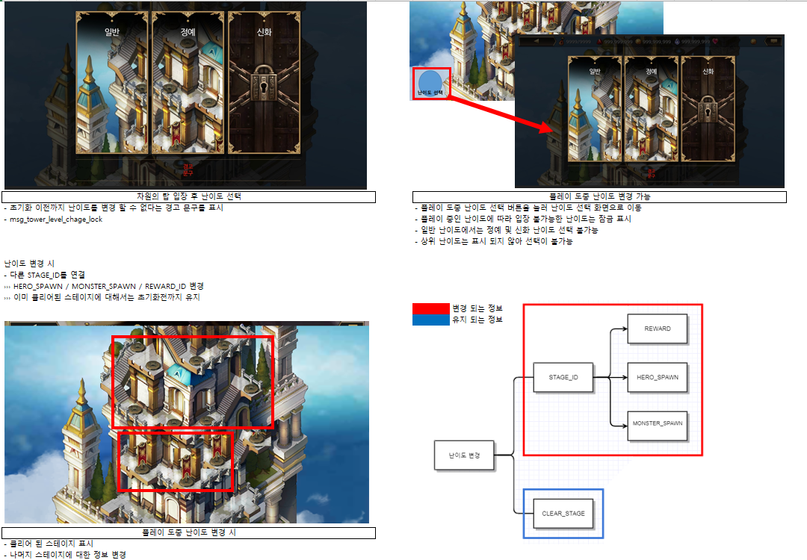

픽업 스토리 콘텐츠
- 신규 캐릭터 전용 기간 한정 스토리
- 서사 체험과 캐릭터 수집 동기 연결
04 · TURN-BASED SRPG
캐릭터 서사와 수집 동기를 연결하는 픽업 콘텐츠, 경쟁형 보스 레이드, 진행 중 난이도를 낮출 수 있는 주간 던전을 기획했습니다.


유저가 난이도를 선택해 도전하는 주간 초기화 던전입니다. 처음 고른 난이도가 너무 높아도 진행 도중 낮은 단계로 바꿔 클리어와 보상 획득을 이어갈 수 있도록 설계했습니다.
난이도를 바꾸면 남은 스테이지의 몬스터·보상 정보를 변경하고, 이미 클리어한 스테이지는 초기화하지 않도록 정의했습니다. 도전을 시작한 뒤의 난이도 선택과 변경 가능 범위, 화면에 표시할 진행 상태를 함께 정리했습니다.